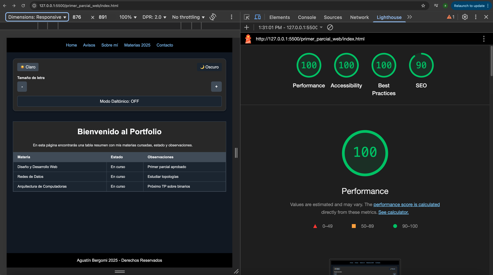
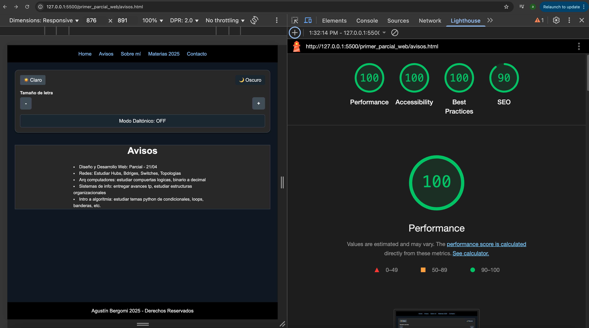
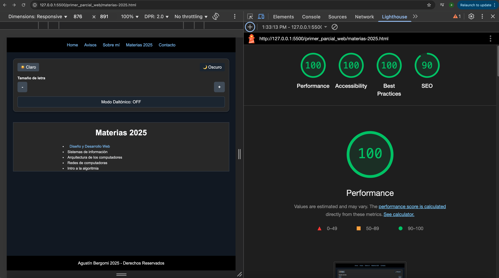
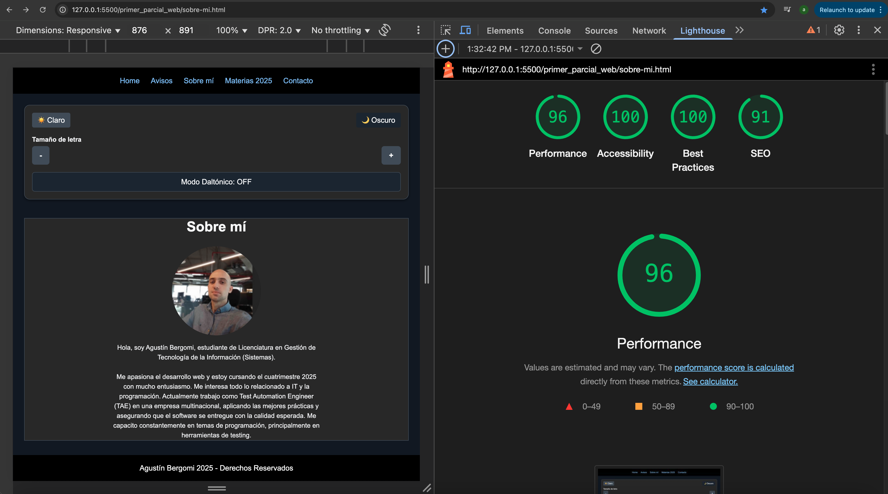
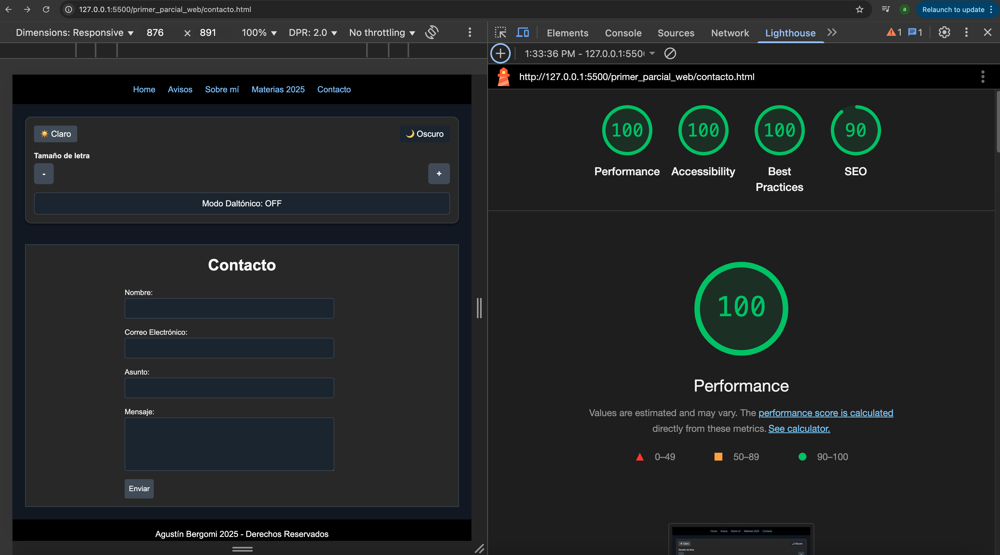

Informe de Mejoras - Segunda Evaluación Parcial
1. Mejoras realizadas respecto a la primera entrega
En esta segunda entrega se incorporaron importantes mejoras de accesibilidad y experiencia de usuario:
- Modo claro/oscuro persistente: Se implementó un sistema que permite alternar entre modo claro y modo oscuro. La preferencia seleccionada por el usuario se guarda en localStorage, y se aplica automáticamente al ingresar a cualquier página del sitio, asegurando coherencia visual.
- Tamaño de letra personalizable y persistente: Se agregaron controles para aumentar o disminuir el tamaño de fuente del contenido principal. El tamaño elegido también se guarda en localStorage, de modo que se mantiene constante entre páginas y visitas posteriores.
- Modo daltónico persistente: Se incorporó un botón que activa un esquema de colores optimizado para personas con daltonismo, reemplazando colores problemáticos por alternativas más visibles. Esta preferencia también se guarda y se aplica en todo el sitio.
- Unificación visual: Se reemplazaron los controles flotantes por un panel lateral de accesibilidad presente en todas las páginas, lo que mejora la coherencia, la visibilidad de las funciones de accesibilidad y la usabilidad general.
2. Accesibilidad – Resultados con Lighthouse
A continuación, se detalla el análisis de accesibilidad utilizando Google Lighthouse, herramienta integrada en el navegador Google Chrome:
✅ Resultados generales por página:
| Página | Accesibilidad | Performance | Best Practices | SEO |
|---|---|---|---|---|
| index.html | 100 | 100 | 100 | 90 |
| avisos.html | 100 | 100 | 100 | 90 |
| materias-2025.html | 100 | 100 | 100 | 90 |
| sobre-mi.html | 100 | 96 | 100 | 91 |
| contacto.html | 100 | 100 | 100 | 90 |
📷 Capturas incluidas:





Las puntuaciones demuestran un trabajo sobresaliente en:
- Uso correcto de etiquetas semánticas (<nav>, <main>, <section>, etc.)
- Contraste adecuado en modo oscuro y daltónico.
- Navegación clara y coherente.
- Formularios accesibles con label asociados a cada input.
- Controles persistentes de accesibilidad (modo visual y tamaño de letra).
3. Uso de JavaScript / jQuery
Se usaron cuatro archivos JavaScript, cada uno cumpliendo una función clara:
- dark_mode.js
- Función
setModo(modo): Cambia entre modo claro y oscuro alterando clases en <body>. - Guarda la elección en localStorage (modo), y la aplica automáticamente al recargar o navegar el sitio.
- Función
- tamano_letra.js
- Permite aumentar/disminuir el tamaño de fuente del contenido mediante dos botones.
- Guarda el tamaño seleccionado en localStorage (preferredFontSize) y lo aplica al cargar cada página.
- Asegura un mínimo y máximo de tamaño para mantener la legibilidad.
- daltonismo.js
- Función
setModoDaltonico(): Alterna el modo daltónico aplicando la clase daltonico al <body>. - Actualiza el texto del botón de activación.
- Se guarda en localStorage y se aplica automáticamente al cargar.
- Función
- contacto.js
- Valida el formulario de contacto al enviarlo.
- Verifica que el nombre, email, asunto y mensaje estén completos y correctos.
- Si hay errores, marca los campos con clases CSS y muestra mensajes.
- Si todo está correcto, muestra un mensaje de agradecimiento personalizado sin enviar el formulario.
4. Accesibilidad y usabilidad según Nielsen
Principios de usabilidad aplicados (Nielsen):
- Visibilidad del estado del sistema: El modo activo (oscuro, claro, daltónico) y el tamaño de letra se reflejan visualmente de forma inmediata.
- Control del usuario: El usuario puede elegir el modo de visualización y el tamaño de fuente según su necesidad, y estos cambios persisten.
- Consistencia y estándares: Los mismos botones, ubicaciones y estilos se aplican en todas las páginas.
- Prevención de errores: El formulario de contacto tiene validaciones claras, evita el envío con datos incompletos y muestra mensajes orientativos.
- Diseño estético y minimalista: El panel lateral concentra las funciones principales de accesibilidad sin sobrecargar la interfaz.
Estrategias específicas de accesibilidad:
- Implementación de modo daltónico con contraste reforzado y colores seguros.
- Botones con texto y emojis para facilitar el reconocimiento visual.
- Ajuste de tamaño de letra para facilitar la lectura a personas con dificultades visuales.
- Estructura semántica clara (<main>, <section>, <aside>, etc.).
- Formularios con etiquetas asociadas a cada campo (<label for="...">).
5. Publicación del sitio
Obtener un dominio personalizado desde donweb.com:
- Accedé a https://donweb.com/es-ar/.
- Registrarse.
- Ingresr un nombre de dominio disponible (por ejemplo, portfolioagustin.com).
- Pagar el registro anual mediante tarjeta o billetera digital.
Asociar el dominio a un sitio en Netlify:
-
Para obtener un hosting gratuito me registraria en https://www.infinityfree.com/ y utilizaria ese servicio ya que lo he utilizado
y es confiable y de buena calidad. Es facil de usar y admite incluso usar archivos PHP.
La mayoria de los hosting gratuitos ofrecen una direccion con subdominio por ejemplo, holacomova.infinityfree.com/agustinportafolio.com
lo cual no luce profesional.
En general se puede vincular un dominio ya registrado al hosting gratuito si se paga el hosting.
- Regisrarse en https://www.infinityfree.com/.
- Subir los archivos de la pagina
- Elegir un dominio (aunque si es gratuito sera algo asi como "https://www.holacomova.infinityfree.com/agustinportafolio.com".
- Esperar la propagación (puede demorar hasta 24hs).
Los pasos para subir desplegar el sitio son bastante simples: